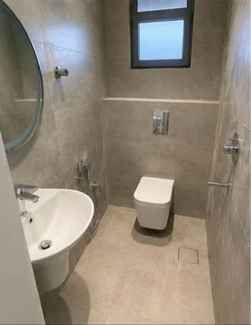

المراجع يدخل العيادة وهو قلقان أصلًا. يقعد في الانتظار، يشوف الكرسي اللي جنبه، والطاولة اللي عليها المجلات، ومقبض باب دورة المياه. وقبل ما يشوف الطبيب، يكون كوّن رأي عن المكان. ولهذا تنظيف عيادات بالرياض له وزن مختلف عن تنظيف أي مكتب أو محل في الرياض: الثقة تبدأ من الاستقبال.
محتويات المقال 43 قسم
- تنظيف عيادات بالرياض: ليش تختلف عن أي مكان ثاني؟
- موقف من واقع العيادات
- الفرق بين التنظيف والتعقيم والتطهير
- تعقيم المجمعات الطبية بالرياض: المناطق حسب مستوى الاحتياج
- التعقيم الصح خطوة بخطوة للأسطح
- المنتجات: كيف تختار وتخزن
- غرفة الكشف من الداخل: ترتيب الشغل
- الأسطح عالية اللمس
- الأرضيات والجدران والأسقف والتكييف
- فصل الأدوات والمناديل والنفايات
- جدول مقترح: يومي وأسبوعي وشهري
- تنظيف مستشفيات بالرياض: المجمعات الكبيرة والمستشفيات
- عيادات الأسنان
- عيادات الجلدية والتجميل
- المختبرات وغرف الأشعة: حدود فريق النظافة
- ركن الأطفال في الانتظار
- التوقيت: قبل المراجعين أو بعدهم
- تدريب فريق النظافة
- قبل افتتاح عيادة أو بعد تجديد
- المصاعد والمواقف والمداخل
- مغاسل اليدين وموزعات الصابون والمعقم
- الستائر الفاصلة والأقمشة
- التعامل مع الانسكابات
- المكاتب الإدارية وغرف الموظفين
- الصيدلية داخل المجمع
- سجل التنظيف: نموذج بسيط
- جولة تفقد المشرف
- المواسم وتغير مواعيد العمل
- عيادات الأطفال
- مراكز العلاج الطبيعي
- أثاث الانتظار: اختيار يسهل التنظيف
- الواجهات الزجاجية واللوحات الإرشادية
- وش تكتب في عقد التنظيف
- بعد ساعات العمل: المفاتيح والأمان
- الإضاءة والأسقف المستعارة
- التواصل مع المراجعين
- ريحة المكان
- التنسيق مع مسؤول مكافحة العدوى في المنشأة
- تقييم شركة التنظيف بعد أول شهر
- أخطاء شائعة
- متى تحتاج الاستعانة بشركة متخصصة؟ وبماذا تسأل قبل الاختيار
- أسئلة شائعة عن تنظيف العيادات
- الخاتمة
في هالمقال نشرح لمدير العيادة أو المجمع الطبي وش يشمل التنظيف والتعقيم البيئي للأسطح والمرافق، وكيف يرتبه حسب المناطق، ووش حدود دور شركة التنظيف. ونتكلم عن تعقيم المجمعات الطبية بالرياض وعن تنظيف مستشفيات بالرياض من زاوية تنظيم الشغل والجدولة.
💡 هالمقال معلوماتي عن التنظيف البيئي للأسطح والمرافق فقط، ومو إرشاد طبي ولا بديل عن سياسات مكافحة العدوى. المرجع الرسمي هو الجهات الصحية المختصة وسياسات المنشأة نفسها. وتعقيم الأدوات الطبية والتعامل مع النفايات الطبية الخطرة من اختصاص الكادر الطبي والجهات المرخصة.
تنظيف عيادات بالرياض: ليش تختلف عن أي مكان ثاني؟
في المكتب، الطاولة الوسخة تزعج. أما في العيادة، فالمكان يستقبل ناس عندهم مناعة ضعيفة، وأطفال، وكبار سن، ومراجعين جايين بسبب عدوى. والأسطح تنلمس من ناس كثير في يوم واحد. ولهذا التنظيف هنا جزء من بيئة المنشأة الصحية، ويحتاج ترتيب ومواد وطريقة شغل أدق.
وفيه فرق ثاني: العيادة فيها أماكن ما يدخلها عامل النظافة إلا بتنسيق، وأجهزة حساسة ما تنمسح بأي منتج، ومناطق لها سياسات خاصة تحددها إدارة المنشأة. ولهذا تنظيف عيادات بالرياض شغل يتنسق مع الإدارة ويمشي على سياساتها، ويتجاوز مسح الأرضيات وتفريغ السلال. وفي تعقيم المجمعات الطبية بالرياض، هالتنسيق يصير أهم كل ما كبرت المنشأة وزادت أقسامها.
موقف من واقع العيادات
تخيّل مديرة عيادة أسنان في شمال الرياض، عيادتها تبان نظيفة ولامعة كل صباح. عامل النظافة يمسح الأرضيات والكاونتر ويفرغ السلال كل يوم. وقبل زيارة تفتيش بأيام، قررت تمشي في العيادة بعين جديدة. سحبت كرسي الانتظار في الزاوية، ولقت تحته غبار متجمع. ورفعت عينها لفتحة التكييف فوق الاستقبال، وكانت سودا من الحواف. وخلف جهاز الأشعة طبقة غبار واضحة، لأن ما أحد كان مكلف ينظف خلفه. وفي دورة مياه المراجعين، كان موزع الصابون فاضي من الصبح، وما أحد انتبه لأن الجولات كانت مرة وحدة في اليوم. وما كان فيه سجل على الباب يوضح متى آخر مرة انتظفت.
العامل ما كان مقصر في اللي طلب منه. المشكلة إن ما كان فيه جدول مكتوب يحدد وش ينظف يوميًا، ووش أسبوعيًا، ومين يتحرك الأجهزة. ومثل هالموقف يتكرر في عيادات كثيرة، وحله يبدأ بخطة واضحة لـتنظيف عيادات بالرياض قبل ما يبدأ بأي مادة تنظيف.
الفرق بين التنظيف والتعقيم والتطهير
الكلمات الثلاث تنقال كأنها وحدة، لكن كل وحدة لها معنى، ولها جهة مسؤولة عنها:
التنظيف
إزالة الأوساخ والغبار والبقع والمواد العضوية عن السطح بالماء والمنظفات. وهو الخطوة الأساسية اللي قبل أي شي ثاني، لأن الأوساخ تحجب المواد المطهرة عن السطح. وهذا الجزء الأكبر من شغل فريق النظافة.
التطهير
استخدام منتج مطهر على الأسطح البيئية بعد تنظيفها، مثل الطاولات والمقابض والأرضيات، حسب تعليمات الشركة المصنعة ووقت التلامس المكتوب على المنتج. وهذا ممكن يكون ضمن شغل فريق النظافة المدرب، حسب سياسة المنشأة والمنتجات المعتمدة فيها.
تعقيم الأدوات الطبية
تعقيم الأدوات والأجهزة الطبية اللي تلامس المريض شغل متخصص، يتولاه الكادر الطبي أو قسم التعقيم المركزي بأجهزة وإجراءات خاصة. وهذا خارج نطاق شركات التنظيف العامة. ولما نقول تعقيم المجمعات الطبية بالرياض في هالمقال، نقصد تطهير الأسطح البيئية والمرافق فقط. ونفس الشي في تنظيف مستشفيات بالرياض: فريق النظافة له دوره، والأقسام الطبية لها أدوارها.
تعقيم المجمعات الطبية بالرياض: المناطق حسب مستوى الاحتياج
مو كل مكان في العيادة يحتاج نفس الشغل. وتقسيم المنشأة لمناطق يساعدك ترتب الجهد والمواد والتكرار. والتقسيم النهائي تحدده إدارة المنشأة حسب سياستها، لكن هذا تقسيم عام:
الاستقبال وغرف الانتظار
أكثر منطقة فيها ناس، وأول انطباع. الكراسي والطاولات والكاونتر وشاشات الأرقام وأقلام التوقيع كلها تنلمس طول اليوم. وتحتاج جولات متكررة خلال الدوام إضافة للتنظيف الصباحي. وفي تنظيف عيادات بالرياض، الانتظار هو المكان اللي يحكم منه المراجع على المكان كله.
غرف الكشف
سرير الكشف، والكرسي، والطاولة، والمغسلة، ومقابض الأبواب والدواليب. وبين المراجعين، الكادر غالبًا يتولى مسح الأسطح اللي لامسها المريض حسب سياسة المنشأة، وفريق النظافة يتولى التنظيف الشامل في أوقات محددة. وتوزيع المسؤوليات هنا لازم يكون مكتوب، عشان ما يصير كل طرف يحسب إن الثاني بيسويها. وهذا من أساسيات تنظيف عيادات بالرياض.
غرف الإجراءات
المناطق اللي فيها إجراءات بسيطة أو غيارات تحتاج مستوى أعلى من العناية، ودخول فريق النظافة لها يكون بتنسيق كامل مع الكادر وحسب سياسة المنشأة. وفي تعقيم المجمعات الطبية بالرياض، هالغرف غالبًا لها تعليمات خاصة من قسم مكافحة العدوى في المنشأة، وفريق النظافة يلتزم فيها.
دورات المياه
تنلمس كثير وتنشاف كثير. المغاسل والحنفيات والمقابض ومفاتيح الإضاءة وموزعات الصابون والمناديل. وتحتاج جولات متكررة خلال اليوم، مع سجل على الباب يوضح آخر وقت انتظفت فيه. ودورة المياه المهملة تهز ثقة المراجع في تنظيف عيادات بالرياض كله.

الممرات
الأرضيات، والدرابزين، والأبواب، ومقابضها، وأزرار المصاعد. والممرات في المجمعات الكبيرة طويلة وزحمتها عالية، فتحتاج تنظيف أرضيات بمعدات مناسبة في أوقات قليلة الحركة. وفي تنظيف مستشفيات بالرياض، الممرات أكبر مساحة يشتغل فيها فريق النظافة.
المخازن
مخازن المستهلكات والمواد النظيفة تحتاج نظافة وترتيب، ورفوف مرفوعة عن الأرض، وفصل واضح بينها وبين أي مواد مستعملة. وفي تعقيم المجمعات الطبية بالرياض، المخزن المرتب يسهل الشغل على الكل.
التعقيم الصح خطوة بخطوة للأسطح
هذي خطوات عامة لتطهير الأسطح البيئية. والتفاصيل النهائية، مثل المنتجات المعتمدة وتكرار كل خطوة، تحددها سياسة المنشأة والجهات المختصة:
١) التجهيز والحماية الشخصية والتهوية
- لبس معدات الحماية اللي تحددها المنشأة، مثل القفازات والكمامة
- تجهيز المنتجات المعتمدة في المنشأة، وكل منتج في علبته الأصلية بملصقه
- فوط وأدوات بألوان مختلفة لكل منطقة
- التأكد من التهوية في الغرفة
- التنسيق مع الكادر قبل دخول أي غرفة كشف أو إجراءات
٢) إزالة الأتربة والأوساخ الظاهرة أولًا
قبل أي مطهر، السطح لازم يكون نظيف من الغبار والبقع والبقايا. لأن المطهر على سطح وسخ يشتغل على الوسخ مو على السطح. فامسح بالماء والمنظف المناسب أول، وبعدين انتقل للخطوة الثانية.
٣) التطهير حسب تعليمات الشركة المصنعة ووقت التلامس
كل منتج مطهر له طريقة استخدام، ووقت لازم يبقى فيه السطح مبلل بالمنتج قبل المسح أو التنشيف، وهذا اسمه وقت التلامس. واتباعه بدقة أهم من كمية المنتج. ولا تستخدم منتج على سطح أو جهاز ما يذكر الملصق أو تعليمات الجهاز إنه مناسب له.
٤) ترتيب العمل من الأنظف للأقل نظافة
ابدأ بالمناطق الأنظف وانتهي بالأقل نظافة، ومن الأعلى للأسفل في كل غرفة. وغير الفوط بين الغرف والمناطق، وفوطة دورة المياه ما ترجع لغرفة الكشف أبد. وهذا الترتيب أساس تنظيف عيادات بالرياض وتعقيم المجمعات الطبية بالرياض وتنظيف مستشفيات بالرياض كلها، لأنه يمنع نقل الأوساخ من مكان لمكان.
٥) التوثيق والمتابعة
سجل في كل منطقة: التاريخ، والوقت، والمهمة، واسم المنفذ، وتوقيع المشرف. والمتابعة تكون بجولات تفقد من المشرف أو مسؤول المنشأة، وأي ملاحظة تتصلح وتتسجل. وفي تنظيف عيادات بالرياض، السجل هو اللي يوضح إن النظام يتطبق فعلًا.
محتاج تنظيف احترافي؟
فريقنا يرتب مع إدارة المنشأة جدول تنظيف يناسب مواعيد العمل، قبل استقبال المراجعين أو بعد آخر موعد، عشان ما يتعطل الشغل في العيادة
المنتجات: كيف تختار وتخزن
المنتجات المستخدمة في المنشأة الصحية تحددها الإدارة حسب سياستها، وغالبًا تكون منتجات مخصصة للاستخدام في المنشآت الصحية ومسجلة لدى الجهات المختصة. ودور فريق النظافة إنه يستخدمها صح:
- كل منتج في علبته الأصلية بملصقه الواضح، وما ينتقل لعلب ثانية بدون ملصق
- قراءة تعليمات الاستخدام ووقت التلامس والتحذيرات قبل أول استخدام
- الاحتفاظ بنشرات بيانات السلامة للمنتجات في مكان معروف
- التخزين في مكان مخصص بعيد عن المراجعين والمستهلكات الطبية
- عدم خلط أي منتجين مع بعض
- متابعة تواريخ الانتهاء
ولو شركة التنظيف تجيب منتجاتها، اطلب قائمة بها قبل البدء، وتأكد مع المسؤول في منشأتك إنها مناسبة لسياستكم وللأسطح والأجهزة عندكم.
غرفة الكشف من الداخل: ترتيب الشغل
لما يدخل فريق النظافة غرفة الكشف بعد الدوام، هذا ترتيب عام يمشي من الأعلى للأسفل ومن الأنظف للأقل نظافة، مع مراعاة اللي تحدده سياسة المنشأة:
- التأكد من الكادر إن الغرفة جاهزة للتنظيف، وإن ما فيها أدوات أو مواد يتولاها الكادر
- الأسطح العالية: الرفوف وأعلى الدواليب وإطارات الإضاءة
- الأسطح عالية اللمس: مقابض الباب والدواليب ومفتاح الإضاءة
- المكتب والكرسي ولوحة المفاتيح والشاشة حسب تعليمات الأجهزة
- سرير الكشف وقاعدته حسب توزيع المسؤوليات مع الكادر
- المغسلة والحنفية والجدار حولها وموزع الصابون
- سلة النفايات العامة: تفريغ وتغيير الكيس
- الأرضية آخر شي، من أبعد زاوية باتجاه الباب
وبعد ما يخلص، يسجل في سجل الغرفة، ويغير أدواته قبل الانتقال للغرفة اللي بعدها.
الأسطح عالية اللمس
هذي الأسطح تنلمس من مراجعين وموظفين كثير في اليوم، وتحتاج تكرار أعلى من غيرها. وفي تنظيف عيادات بالرياض، خلها في جولات خلال الدوام:
- مقابض الأبواب من الجهتين، وأزرار المصاعد، والدرابزين
- طاولات الاستقبال وأقلام التوقيع وأجهزة الدفع
- كراسي الانتظار، خصوصًا مساند اليدين
- أسرة وكراسي الكشف، حسب توزيع المسؤوليات مع الكادر
- لوحات المفاتيح والماوس في الاستقبال والمكاتب
- شاشات اللمس وأجهزة تسجيل الدخول الذاتي
- مفاتيح الإضاءة وموزعات الصابون والمعقم
والأجهزة الإلكترونية والشاشات تنظف بمنتجات مناسبة لها حسب تعليمات الشركة المصنعة للجهاز، بفوطة مبللة شوي بدون رش مباشر. وفي تعقيم المجمعات الطبية بالرياض، الأسطح عالية اللمس هي اللي تحتاج أوضح توزيع للمسؤوليات بين فريق النظافة والكادر.
الأرضيات والجدران والأسقف والتكييف
الأرضيات تنظف يوميًا بطريقة تناسب نوعها، مع لافتات تحذير وقت ما تكون مبلولة عشان ما ينزلق أحد. والجدران تنمسح بشكل دوري، خصوصًا الأجزاء اللي على مستوى اليد وحول مفاتيح الإضاءة. والأسقف وفتحات الإضاءة تنظف حسب الجدول الأسبوعي أو الشهري.
أما التكييف، ففتحات الهوا تجمع غبار يبان على الحواف. ونظافتها الخارجية ممكن تكون ضمن شغل فريق النظافة، أما فلاتر أنظمة التكييف المركزية وصيانتها فتكون مع الجهة المسؤولة عن الصيانة في المنشأة حسب جدولها. وفي تنظيف مستشفيات بالرياض، أنظمة التهوية لها متطلبات خاصة تتابعها إدارة المنشأة مع الجهات المختصة. وفي تنظيف عيادات بالرياض، أقل شي إن الفتحات الظاهرة تكون نظيفة، لأنها تنشاف من كرسي الانتظار.
فصل الأدوات والمناديل والنفايات
فريق النظافة يحتاج أدوات مفصولة لكل منطقة: فوط وممسحات بألوان مختلفة، ودلاء خاصة لدورات المياه، وأدوات ما تنتقل بين الغرف. وكل أداة تنظف وتنشف بعد الاستخدام.
أما النفايات، ففيه فرق واضح: النفايات العامة، مثل الورق والمناديل العادية والتغليف، يتعامل معها فريق النظافة بأكياس وحاويات مناسبة. أما النفايات الطبية الخطرة، مثل الأدوات الحادة والمواد الملوثة، فالتعامل معها وجمعها ونقلها من اختصاص الكادر الطبي والجهات المرخصة، وحسب سياسة المنشأة والأنظمة. وفريق النظافة العام ما يتعامل معها إلا في حدود اللي تحدده المنشأة ويكون مدرب عليه. وفي تعقيم المجمعات الطبية بالرياض، وضوح هالحدود يحمي الفريق والمراجعين والمنشأة. وفي تنظيف عيادات بالرياض، أول سؤال تسأله لأي شركة: وش حدود شغلكم مع النفايات؟
جدول مقترح: يومي وأسبوعي وشهري
هذا جدول عام تقدر تعدله حسب حجم المنشأة وسياستها. والتكرار النهائي تحدده الإدارة:
| التكرار | المهام |
|---|---|
| يوميًا قبل الدوام | الأرضيات، والاستقبال، وغرف الانتظار، ودورات المياه، والأسطح عالية اللمس، وتفريغ النفايات العامة |
| خلال الدوام | جولات على دورات المياه والأسطح عالية اللمس والانتظار، وأي انسكاب فوري |
| يوميًا بعد الدوام | تنظيف شامل لغرف الكشف بالتنسيق مع الكادر، والممرات، والمكاتب، وتعبئة السجلات |
| أسبوعيًا | الجدران على مستوى اليد، وخلف الأثاث، والأبواب كاملة، والمخازن، وفتحات التكييف الظاهرة |
| شهريًا | الأسقف والإضاءة، وخلف الأجهزة الثابتة بالتنسيق، والنوافذ، وتنظيف عميق للأرضيات |
والجدول هذا نقطة بداية في تنظيف عيادات بالرياض. والعيادة الصغيرة ممكن تكتفي بأجزاء منه، أما تعقيم المجمعات الطبية بالرياض في المجمعات الكبيرة فغالبًا يحتاج جدول لكل دور أو قسم.
تنظيف مستشفيات بالرياض: المجمعات الكبيرة والمستشفيات
كل ما كبرت المنشأة، كبر التحدي. المستشفى يشتغل طول الوقت، وفيه أقسام كثيرة، وكل قسم له احتياجات وسياسات. ولهذا تنظيف مستشفيات بالرياض يحتاج:
- جدولة دقيقة لكل قسم وكل دور، مع ورديات تغطي ساعات التشغيل
- تنسيق يومي مع إدارة المنشأة وقسم مكافحة العدوى فيها
- فرق مدربة على سياسات المنشأة، وعلى التعامل مع المناطق الحساسة
- مشرفين يتابعون الجودة ويوثقون
- معدات مناسبة للمساحات الكبيرة، مثل مكاين الأرضيات
وحجم المنشأة يحدد النطاق المناسب. العيادة الصغيرة ممكن يكفيها عقد تنظيف دوري بساعات محددة. أما المستشفى، فغالبًا يحتاج جهة متخصصة في المنشآت الصحية، عندها خبرة وتدريب واعتمادات تناسب هالنوع من الشغل. وفي تنظيف مستشفيات بالرياض، مو كل شركة تنظيف عامة مناسبة لكل الأقسام. وفي تعقيم المجمعات الطبية بالرياض، المجمع الطبي متعدد العيادات يقع في النص: يحتاج تنظيم أكثر من العيادة، لكن نطاقه غالبًا أقل من المستشفى.
عيادات الأسنان
عيادة الأسنان فيها كرسي علاج بأجزاء كثيرة، وأجهزة صغيرة، ورذاذ ماء أثناء العلاج. والأسطح القريبة من الكرسي تحتاج عناية بين المراجعين، وغالبًا يتولاها المساعد أو الكادر حسب سياسة العيادة، لأنها مرتبطة مباشرة بالعلاج. أما فريق النظافة، فدوره في الأرضيات، والجدران، والمغاسل، والدواليب من برا، والاستقبال، ودورات المياه، وغرفة التعقيم من ناحية الأرضيات والأسطح العامة بس.
- الكرسي والأجهزة المتصلة فيه: الكادر حسب سياسة العيادة
- الأرضية حول الكرسي: فريق النظافة بعد آخر مريض
- المغاسل والحنفيات والأسطح العامة في الغرفة: فريق النظافة حسب الجدول
- غرفة التعقيم: الأدوات للكادر، والأرضيات والأسطح العامة لفريق النظافة بتنسيق
وفي تنظيف عيادات بالرياض لعيادات الأسنان، الجدول المكتوب اللي يوضح هالتوزيع يمنع إن مكان ينسى بين الطرفين. ونفس الفكرة تنطبق على أقسام الأسنان داخل تعقيم المجمعات الطبية بالرياض.
عيادات الجلدية والتجميل
هالعيادات تهتم بالمظهر بشكل كبير، والمراجع فيها يلاحظ كل تفصيلة. غرف الانتظار فيها أثاث فاخر وأسطح لامعة وزجاج ومرايات كثيرة، وكلها تبين أي بقعة أو بصمة. وغرف الإجراءات فيها أجهزة حساسة، تنظيفها حسب تعليمات الشركة المصنعة وتحت إشراف الكادر. وفي تنظيف عيادات بالرياض لهالعيادات، الاهتمام بالزجاج والمرايات والأثاث المنجد يكون جزء ثابت من الجدول اليومي، لأن المظهر هنا جزء من تجربة المراجع.
المختبرات وغرف الأشعة: حدود فريق النظافة
المختبر وغرف الأشعة فيها أجهزة غالية وحساسة، وإجراءات أمان خاصة. ودخول فريق النظافة لها يكون بتنسيق كامل وتعليمات واضحة من المسؤول عن القسم:
- الأجهزة نفسها: ما يلمسها فريق النظافة إلا بتعليمات المسؤول وحسب تعليمات الشركة المصنعة
- الأرضيات والأسطح العامة: حسب الجدول وبعد إذن القسم
- مناطق العينات والمواد: من اختصاص الكادر
- غرف الأشعة: الالتزام بتعليمات الأمان الخاصة فيها قبل الدخول
وفي تنظيف مستشفيات بالرياض، هالأقسام غالبًا لها فرق تنظيف مدربة عليها بالذات. وفي تعقيم المجمعات الطبية بالرياض، الأفضل تحدد الإدارة مين يدخل ومتى، وتكتبها في خطة التنظيف.
ركن الأطفال في الانتظار
كثير من العيادات فيها ركن ألعاب للأطفال في الانتظار. والأطفال يلمسون كل شي، ويحطون الألعاب في فمهم أحيانًا. فهالركن يحتاج اهتمام خاص: ألعاب سهلة التنظيف من البلاستيك القاسي بدل القماش، ومسحها بشكل متكرر خلال اليوم بمنتج مناسب للألعاب حسب تعليماته، وتنظيف الأرضية والسجاد تحتها. وبعض العيادات تقلل الألعاب أو تشيلها في مواسم معينة حسب سياستها. وفي تنظيف عيادات بالرياض، ركن الأطفال من أكثر الأماكن اللي تحتاج جولات، لأنه أكثر مكان ينلمس في الانتظار.
التوقيت: قبل المراجعين أو بعدهم
التنظيف الشامل وقت الدوام يزعج المراجعين، ويخلي الأرضيات مبلولة في الممرات، ويعطل الكادر. ولهذا أغلب التنظيف العميق يكون قبل فتح العيادة أو بعد آخر موعد. وخلال الدوام، يكتفي الفريق بالجولات السريعة للأسطح عالية اللمس ودورات المياه وأي انسكاب. وفي تنظيف عيادات بالرياض، الاتفاق على المواعيد من البداية يحل مشاكل كثيرة. وفي تنظيف مستشفيات بالرياض، اللي يشتغل طول الوقت، التنظيف يتوزع على ورديات، ويتنسق مع أوقات الهدوء في كل قسم.
تدريب فريق النظافة
فريق النظافة في المنشأة الصحية يحتاج تدريب يختلف عن تنظيف البيوت والمكاتب. ويشمل التدريب عادة:
- سياسات المنشأة في التنظيف والتطهير
- ترتيب العمل من الأنظف للأقل نظافة
- الأدوات الملونة ومتى تستخدم كل وحدة
- لبس معدات الحماية وخلعها بشكل صحيح
- التعامل الآمن مع المنتجات وعدم خلطها
- حدود العمل: وش اللي ما يلمسه الفريق، ومين يبلغ لو صار شي
- تعبئة السجلات
والتدريب يتكرر مع كل موظف جديد، ومع أي تحديث في سياسة المنشأة. وفي تنظيف مستشفيات بالرياض، التدريب المستمر جزء أساسي من الخطة. وفي تعقيم المجمعات الطبية بالرياض، الفريق المدرب يقلل الأخطاء ويسهل الإشراف.
قبل افتتاح عيادة أو بعد تجديد
العيادة الجديدة، أو اللي رجعت بعد تجديد أو صيانة، تحتاج تنظيف شامل قبل أول مراجع. بعد أعمال التشطيب والتركيب يكون فيه غبار ناعم على كل سطح، وداخل الدواليب، وفي فتحات التكييف. وهنا تنظيف عيادات بالرياض يشمل الأرضيات والجدران والأسقف والزجاج والدواليب من الداخل والخارج ودورات المياه، والأثاث الجديد. أما الأجهزة الطبية الجديدة، فتنظيفها وتجهيزها حسب تعليمات الشركة المصنعة ومن مسؤولية الكادر. وفي أقسام تنظيف مستشفيات بالرياض الجديدة، هالخطوة تكون جزء من استلام القسم قبل التشغيل.
المصاعد والمواقف والمداخل
المجمعات الطبية الكبيرة لها مداخل ومواقف ومصاعد يمر منها كل المراجعين. أزرار المصاعد من أكثر الأسطح لمسًا في المبنى، وتحتاج جولات متكررة. والمداخل الزجاجية تبان عليها البصمات بسرعة. والمواقف المغطاة تحتاج كنس وتنظيف دوري. وفي تنظيف مستشفيات بالرياض، هالمناطق المشتركة غالبًا لها فريق مستقل عن فرق الأقسام، عشان ما تنتقل أدوات المواقف لداخل المبنى.
مغاسل اليدين وموزعات الصابون والمعقم
نظافة الأيدي جزء أساسي من أي منشأة صحية، وفريق النظافة له دور فيها حتى لو ما يحس فيه أحد: إنه يتأكد إن المغاسل نظيفة، وإن الصابون والمناديل الورقية متوفرة دايمًا، وإن موزعات معقم الأيدي عند المداخل وفي الممرات مليانة وشغالة. الموزع الفاضي في الاستقبال يرسل رسالة سلبية للمراجع، حتى لو كل شي ثاني نظيف. خل تعبئة الموزعات جزء من كل جولة، وسجلها في نفس سجل دورات المياه. ونظف الموزعات نفسها من برا، لأنها تنلمس من كل اللي يستخدمها.
الستائر الفاصلة والأقمشة
بعض غرف الكشف والإجراءات فيها ستائر فاصلة حول السرير، وبعض العيادات فيها كراسي منجدة في الانتظار. والأقمشة تمسك الغبار والبقع، وتنلمس كثير. والستائر الفاصلة لها جدول تبديل وغسيل تحدده سياسة المنشأة، أو تكون من النوع اللي يستخدم لفترة ويتبدل. والكراسي المنجدة تحتاج شفط دوري، وتنظيف للبقع بالطريقة المناسبة للقماش. وكثير من المنشآت تفضل كراسي بأسطح سهلة المسح في الانتظار، لأنها أسهل في التنظيف المتكرر.
التعامل مع الانسكابات
الانسكابات العادية، مثل ماء أو قهوة في الانتظار، يتعامل معها فريق النظافة فورًا مع لافتة تحذير لين تنشف الأرض. أما أي انسكاب لسوائل جسم أو مواد من غرف الكشف والإجراءات، فهذا له إجراء خاص في سياسة المنشأة، ويتعامل معه شخص مدرب بالأدوات المخصصة. والأهم إن فريق النظافة يعرف من البداية: وش يتعامل معه بنفسه، ووش يبلغ عنه، ولمين يبلغ. وهالشي لازم يكون مكتوب ومشروح في التدريب.
المكاتب الإدارية وغرف الموظفين
المكاتب الإدارية وغرف استراحة الموظفين تنسى أحيانًا لأنها بعيدة عن المراجعين. لكن الموظفين يتنقلون بينها وبين الأقسام طول اليوم. نظف المكاتب ولوحات المفاتيح والهواتف المشتركة حسب جدول، وغرفة الاستراحة يوميًا: الطاولات، والميكروويف، والثلاجة من برا، والمغسلة، والسلال. والثلاجة من الداخل تنظف أسبوعيًا، ويتخلص من الأكل القديم فيها. وخل أكل وشرب الموظفين في غرفة الاستراحة بس، بعيد عن الأقسام.
الصيدلية داخل المجمع
لو المجمع فيه صيدلية، ففريق النظافة يتولى الأرضيات، والكاونتر من برا، والزجاج، والأرفف الظاهرة من الغبار بتنسيق مع الصيدلي. أما ترتيب الأدوية والتعامل معها، والأرفف الداخلية والثلاجات اللي فيها أدوية، فهذا من اختصاص الصيدلية نفسها وحسب أنظمتها. والوضوح هنا يحمي الطرفين.
سجل التنظيف: نموذج بسيط
السجل يقدر يكون ورقة على باب كل منطقة، أو ملف إلكتروني يعبيه المشرف. وهذا نموذج تقدر تنقله وتعدله:
| المنطقة | المهمة | التاريخ | الوقت | المنفذ | المشرف |
|---|---|---|---|---|---|
| الاستقبال والانتظار | الأسطح عالية اللمس | ||||
| دورات المياه | جولة تنظيف وتعبئة الموزعات | ||||
| غرف الكشف | تنظيف شامل بعد الدوام | ||||
| الممرات | الأرضيات والمقابض | ||||
| المخزن | تنظيف وترتيب أسبوعي |
والمشرف يراجع السجل ويوقع عليه، ويحتفظ فيه حسب سياسة المنشأة. ولما يكون فيه ملاحظة، تتسجل في نفس الورقة مع وقت إصلاحها.
جولة تفقد المشرف
السجل يوضح إن الشغل انعمل، والجولة توضح إنه انعمل صح. خل المشرف أو مسؤول المنشأة يسوي جولة دورية، ويشيك على أماكن محددة: تحت كراسي الانتظار، وخلف الأجهزة الثابتة، وفتحات التكييف، وموزعات الصابون، وزوايا دورات المياه، ومقابض الأبواب. وغير مكان البداية ووقت الجولة من مرة لمرة. وأي ملاحظة تتصلح وتتسجل، وتتناقش مع الفريق عشان ما تتكرر.
المواسم وتغير مواعيد العمل
في مواسم معينة، مثل الشتاء ورمضان، تتغير زحمة العيادات ومواعيد عملها. وفي رمضان بالذات، كثير من العيادات تشتغل بعد الإفطار لين وقت متأخر. فالجدول لازم يتعدل مع المواعيد الجديدة: التنظيف الشامل يتحرك لوقت مناسب قبل الفتح أو بعد آخر موعد، والجولات تزيد في أوقات الذروة. ونسق التعديل مع شركة التنظيف قبل الموسم بأسبوع على الأقل.
عيادات الأطفال
عيادة الأطفال فيها حركة أكثر، وأيادي صغيرة تلمس كل شي، وأحيانًا انسكابات أكثر من غيرها. وكراسي الانتظار وطاولات تغيير الحفاضات وركن الألعاب تحتاج جولات متكررة. وطاولة تغيير الحفاضات بالذات تنظف وتطهر حسب سياسة العيادة بعد كل استخدام، مع توفير غطاء ورقي إذا كانت السياسة تطلبه. والأرضيات في الانتظار تتنظف أكثر من مرة في اليوم، لأن الأطفال يقعدون ويحبون عليها. واختيار منتجات مناسبة للأماكن اللي يوصل لها الأطفال، مع تهوية زينة، جزء من الخطة.
مراكز العلاج الطبيعي
مراكز العلاج الطبيعي فيها أسرة علاج، وفرشات تمارين، وأجهزة رياضية، وأوزان، ومقابض كثيرة. وأغلبها ينلمس مباشرة بجلد المراجع. وتنظيف الأجهزة يكون حسب تعليمات الشركة المصنعة لكل جهاز، وتطهير الأسطح بين المراجعين يتوزع بين الكادر وفريق النظافة حسب سياسة المركز. والفرشات والوسائد لازم تكون بأغطية سهلة المسح، والمناشف تتبدل لكل مراجع. وفريق النظافة يتولى الأرضيات والمرايا والأسطح العامة وغرف تبديل الملابس ودورات المياه.
أثاث الانتظار: اختيار يسهل التنظيف
لو بتجهز عيادة جديدة أو تجدد الانتظار، خل سهولة التنظيف من معايير اختيار الأثاث. الكراسي بأسطح ملساء سهلة المسح أسهل من الكراسي القماش. والطاولات بدون زخارف وحواف كثيرة أسهل في التطهير. والأرضيات بدون فواصل كثيرة أسهل في التنظيف من البلاط الصغير. وابعد الأثاث عن الجدار مسافة بسيطة تسمح بالتنظيف خلفه، أو اختار أثاث بأرجل مرتفعة يسهل التنظيف تحته. هالقرارات الصغيرة توفر وقت كل يوم.
الواجهات الزجاجية واللوحات الإرشادية
مداخل العيادات والمجمعات غالبًا زجاجية، والزجاج يبين البصمات والغبار بسرعة، خصوصًا مع غبار الرياض. امسح الزجاج من الداخل يوميًا، وعند مقابض الأبواب أكثر من مرة. واللوحات الإرشادية والشاشات في الممرات تجمع غبار على حوافها العلوية، فخلها في الجدول الأسبوعي. ولوحات التحذير "أرضية مبلولة" لازم تكون متوفرة وتستخدم كل مرة تنمسح الأرض.
وش تكتب في عقد التنظيف
العقد الواضح يمنع سوء الفهم بين المنشأة وشركة التنظيف. وهذي بنود تفيدك تتأكد منها، مع مراجعة الصياغة القانونية مع المختص عندك:
- نطاق الشغل: المناطق والمهام بالتفصيل
- اللي خارج النطاق بوضوح: تعقيم الأدوات الطبية، والنفايات الطبية الخطرة، والأجهزة الحساسة
- الجدول: الأوقات والأيام وعدد الزيارات أو الورديات
- المنتجات: من يوفرها، والتزام الشركة بالمنتجات المعتمدة في المنشأة
- التدريب: كيف تدرب الشركة فريقها، وهل يحضر تدريب المنشأة
- الإشراف: اسم المشرف وطريقة التواصل
- التوثيق: نوع السجلات وتكرار التقارير
- طريقة التعامل مع الملاحظات وإصلاحها
بعد ساعات العمل: المفاتيح والأمان
لو التنظيف الشامل بيصير بعد إغلاق العيادة، فحدد من البداية: مين يستلم المفاتيح، ومين يفتح ويقفل، ووش المناطق المسموح يدخلها الفريق والمناطق المقفلة. والملفات الطبية والأجهزة الغالية تكون في أماكن مقفلة قبل دخول الفريق. ووجود مشرف من الشركة أو موظف من المنشأة وقت التنظيف بعد الدوام يعطي راحة بال للطرفين، ويسهل حل أي موقف على طول.
الإضاءة والأسقف المستعارة
كثير من العيادات فيها أسقف مستعارة وإضاءة مدمجة. والغبار يقعد على حواف البلاطات وأغطية الإضاءة وفتحات التكييف المدمجة فيها. تنظيفها يكون شهري تقريبًا، بسلم آمن، وبعد فصل الكهرباء عن الإضاءة لو بتنفك أغطيتها. ولا ترفع بلاطات السقف بدون تنسيق مع الصيانة، لأن فوقها تمديدات.
التواصل مع المراجعين
اللوحات الصغيرة تساعد: لوحة عند المغاسل عن غسيل اليدين، ولوحة عند موزعات المعقم، ولوحة على باب دورة المياه فيها آخر وقت تنظيف. والمراجع اللي يشوف سجل محدث على الباب يرتاح أكثر من اللي ما يشوف أي شي. وخل فيه طريقة سهلة للمراجع يبلغ لو لاحظ شي، مثل رقم على اللوحة أو ملاحظة للاستقبال.
ريحة المكان
الريحة أول شي يحسه المراجع لما يفتح الباب. وريحة المنظفات القوية ممكن تزعج بعض المراجعين، خصوصًا اللي عندهم حساسية، وريحة الرطوبة أو الصرف تعطي انطباع سيئ حتى لو المكان نظيف. والحل غالبًا في التهوية الجيدة، وتنظيف مصادر الريحة نفسها مثل المصارف والسلال وفتحات التكييف، واستخدام المنتجات بالكمية المكتوبة في تعليماتها بدل الزيادة. والمعطرات القوية ما تحل مصدر الريحة، وممكن تضايق بعض المراجعين، فخل استخدامها حسب سياسة المنشأة.
التنسيق مع مسؤول مكافحة العدوى في المنشأة
في المجمعات الكبيرة والمستشفيات، غالبًا فيه شخص أو قسم مسؤول عن مكافحة العدوى. وهذا الشخص هو المرجع لفريق النظافة في أي سؤال عن المنتجات، أو المناطق الحساسة، أو التعامل مع حالات خاصة. خل فيه قناة تواصل واضحة بينه وبين مشرف شركة التنظيف، واجتماع دوري يراجعون فيه الملاحظات والتحديثات. ولو المنشأة صغيرة وما فيها قسم مستقل، فالطبيب المسؤول أو مدير العيادة يلعب هالدور.
تقييم شركة التنظيف بعد أول شهر
أول شهر مع أي شركة تنظيف فترة تجربة حقيقية. وفي نهايته، راجع معهم:
- هل السجلات متعبية بانتظام وفي وقتها؟
- هل الملاحظات اللي سجلتها انحلت بسرعة؟
- هل الفريق ملتزم بالمواعيد ولا يأثر على المراجعين؟
- هل الفريق ثابت، ولا كل أسبوع وجوه جديدة؟
- هل الأماكن اللي تنسى عادة، مثل خلف الأجهزة وتحت الكراسي، صارت نظيفة؟
- وش الملاحظات اللي جت من الكادر أو المراجعين؟
والتقييم الصريح من البداية يساعد الشركة تعدل، ويساعدك تقرر بثقة تكمل أو لا.
أخطاء شائعة
- خلط المواد الكيميائية: خلط الكلور مع منظفات ثانية يطلع أبخرة ضارة، وكل منتج يستخدم لحاله حسب تعليماته
- التعقيم بدون تنظيف قبله: المطهر ما يوصل للسطح لو عليه أوساخ
- المسح السريع قبل وقت التلامس: المنتج ما ياخذ وقته
- إهمال ما خلف الأجهزة والأثاث: غبار متراكم يكشفه أول تفتيش
- نفس الفوطة لكل الغرف: تنقل الأوساخ من دورة المياه لغرفة الكشف
- عدم التوثيق: الشغل يصير لكن ما فيه دليل عليه
- عدم وضوح المسؤوليات بين الكادر وفريق النظافة
- استخدام منتجات غير مناسبة على الأجهزة والشاشات
وأغلب هالأخطاء سببها غياب خطة مكتوبة وتدريب واضح. وفي تنظيف عيادات بالرياض، الخطة المكتوبة توضح لكل واحد مهامه. وفي تنظيف مستشفيات بالرياض، التدريب المستمر يخلي الفريق يطبقها صح.
متى تحتاج الاستعانة بشركة متخصصة؟ وبماذا تسأل قبل الاختيار
العيادة الصغيرة ممكن تعتمد على عامل نظافة داخلي للشغل اليومي. لكن فيه حالات تحتاج فيها جهة متخصصة: التنظيف العميق الدوري، أو قبل افتتاح عيادة جديدة أو بعد تجديد، أو لما يكون المجمع كبير وفريقه الداخلي ما يغطي كل شي، أو لما تبي تنظيم أوضح وتوثيق أدق.
وقبل ما تختار، اسأل أي شركة تنظيف بالرياض أو جهة تنظيف تتعامل معها:
- هل عندكم خبرة في المنشآت الصحية؟ ووش نوع المنشآت اللي اشتغلتوا فيها؟
- كيف تدربون فريقكم على العمل في العيادات؟
- وش المنتجات اللي تستخدمونها؟ وهل تقدرون تلتزمون بالمنتجات المعتمدة في منشأتنا؟
- كيف تنسقون مع إدارة المنشأة والكادر؟ ومين المشرف المسؤول؟
- وش حدود شغلكم مع النفايات؟ ووش اللي ما يدخل في نطاقكم؟
- كيف توثقون الشغل؟ وهل تعطوننا سجلات؟
- هل تقدرون تشتغلون في أوقات ما تتعارض مع المراجعين؟
وفي مؤسسة نقاء للتنظيف، نشتغل في تنظيف عيادات بالرياض على التنظيف البيئي للأسطح والمرافق، ونرتب الجدول مع إدارة المنشأة حسب مواعيد العمل وسياساتها، ونلتزم بحدود دورنا: ما نتعامل مع تعقيم الأدوات الطبية ولا النفايات الطبية الخطرة. وفي تعقيم المجمعات الطبية بالرياض، نبدأ بمعاينة نفهم فيها المنشأة وأقسامها قبل أي جدول. أما تنظيف مستشفيات بالرياض بأقسامه الحساسة، فالأفضل تتأكد من الجهة المتخصصة اللي تناسب متطلباته.
أسئلة شائعة عن تنظيف العيادات
الخاتمة
النظافة في العيادات والمجمعات الطبية بالرياض تبدأ من الاستقبال وتمتد لكل زاوية. والترتيب الصح: تنظيف أول ثم تطهير حسب تعليمات المنتج، ومن الأنظف للأقل نظافة، مع أدوات مفصولة وتوثيق واضح. ومع وضوح حدود كل طرف، الكادر وفريق النظافة والجهات المرخصة، يمشي الشغل بدون فجوات. والمرجع دائمًا سياسات المنشأة والجهات الصحية المختصة.
ولو تحتاج تنظيم أوضح، فريق مؤسسة نقاء يخدم المنشآت في الرياض، ويرتب معك معاينة وجدول يناسب مواعيد عملك.
جدول تنظيف يناسب مواعيد منشأتك
نسق معنا معاينة لمنشأتك، ونرتب جدول تنظيف بيئي للأسطح والمرافق يناسب مواعيد العمل
محتاج تنظيف احترافي؟
تواصل معنا لتنسيق معاينة لعيادتك أو مجمعك الطبي، ونرتب الجدول مع إدارة المنشأة
- الاستقبال وغرف الانتظار ودورات المياه
- الأسطح عالية اللمس والممرات
- جدول وتوثيق بالتنسيق مع الإدارة
- خدمة في كل أحياء الرياض